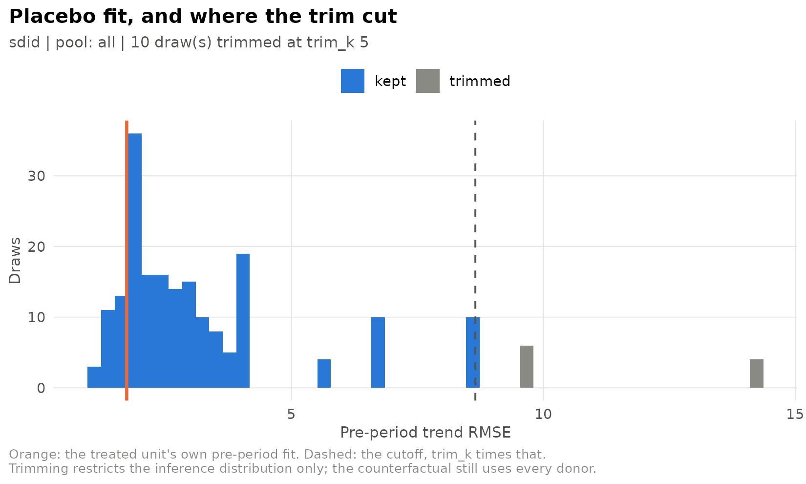
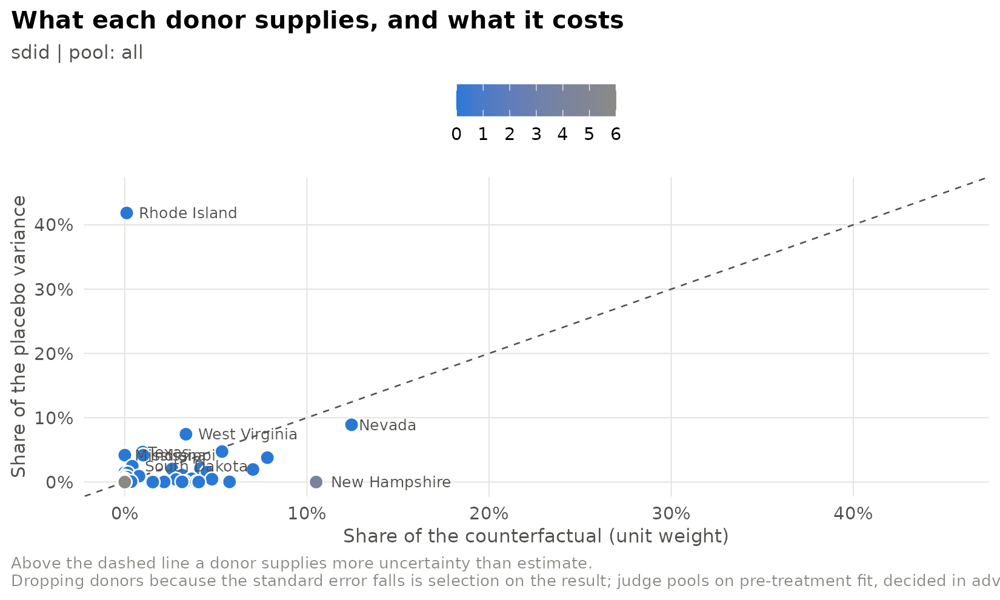

Placebo inference with one treated unit
Source:vignettes/placebo-inference.Rmd
placebo-inference.Rmd
library(sdidlab)
panel <- prop99_panel()Why placebo inference
Arkhangelsky et al. (2021) offer three variance estimators for SDID: bootstrap, jackknife and placebo. With a single treated unit, the bootstrap and the jackknife both need to resample or drop the treated unit, so they are undefined, and the placebo variance is the one that applies. It assigns treatment to control units at random, re-estimates the effect each time, and uses the spread of those placebo effects as the standard error.
sdidlab computes it exactly as synthdid does. With trimming off
(trim_k = Inf), the result is
sqrt(vcov(est, method = "placebo")) from synthdid, draw for
draw under the same seed:
setup <- build_setup(sdid_spec(), panel)
est <- synthdid::synthdid_estimate(setup$Y, setup$N0, setup$T0)
set.seed(42); theirs <- sqrt(vcov(est, method = "placebo", replications = 100))
set.seed(42); mine <- placebo_se_trimmed(est, replications = 100, trim_k = Inf)$se
c(synthdid = as.numeric(theirs), sdidlab = mine)
#> synthdid sdidlab
#> 10.28802 10.28802Why trim
The placebo standard error treats every control as a stand-in for the treated unit. In a large, heterogeneous donor pool, many controls look nothing like the treated unit: the estimator cannot fit their pre-period, so their placebo “effects” are large for reasons unrelated to uncertainty about the treated unit’s effect. Those draws fatten the tails of the reference distribution and inflate the standard error.
placebo_se_trimmed() drops placebos whose pre-period fit
is more than trim_k times worse than the treated unit’s.
This is in the spirit of Abadie, Diamond and Hainmueller (2010), who
exclude placebos with poor pre-treatment fit from their permutation
test. Two design points matter:
- It trims the inference distribution, not the donor pool. The counterfactual is still built from every donor, and the point estimate is unchanged.
-
The criterion is pre-treatment fit, decided in
advance. Fit is measured without reference to any unit’s
estimated effect, so trimming cannot be tuned to produce a preferred
answer as long as
trim_kis fixed beforehand.
Fit is measured as the RMSE of the treated-minus-synthetic gap after removing its pre-period mean, because SDID’s unit fixed effects absorb a constant level difference by design. When covariates are used, it is computed on the covariate-adjusted outcome the estimator actually fits.
Trimming is sdidlab’s addition, not part of the SDID paper, and its statistical properties are not established in the literature. Report the untrimmed standard error alongside it, and treat a conclusion that holds under one but not the other as fragile.
What trimming did here
plot_placebo_trim() shows every placebo’s pre-period fit
and where the cutoff fell:
run <- fit_spec(sdid_spec(inference = list(replications = 200)), panel, seed = 1)
plot_placebo_trim(run)
untrimmed <- fit_spec(sdid_spec(inference = list(replications = 200, trim_k = Inf)), panel, seed = 1)
data.frame(
trim_k = c("Inf (synthdid)", "5"),
se = c(untrimmed$fit$se, run$fit$se),
placebos_kept = c(untrimmed$fit$placebos_kept, run$fit$placebos_kept)
)
#> trim_k se placebos_kept
#> 1 Inf (synthdid) 10.053244 200
#> 2 5 9.945938 190The 38 Proposition 99 donors are fairly homogeneous, so trimming changes the standard error only modestly here. It matters most in pools of hundreds of units with very different trajectories.
Checking calibration with in-time placebos
A standard error can be checked against a case where the true effect is known to be zero. Move the treatment date back into the pre-period, fit only on pre-1989 data, and see how often the resulting |t| is large. A calibrated standard error gives |t| < 1.96 about 95% of the time. With only a handful of fake dates this is a sanity check, not a test:
fake_years <- 1980:1986
calib <- do.call(rbind, lapply(fake_years, function(y) {
do.call(rbind, lapply(c(Inf, 5), function(k) {
spec <- sdid_spec(design = list(treat_time = y, window = list(end = 1988)),
inference = list(replications = 100, trim_k = k))
r <- fit_spec(spec, panel, seed = seed_for(spec))
data.frame(fake_year = y, trim_k = k, att = r$fit$att, se = r$fit$se, t = r$fit$t)
}))
}))
calib$t <- round(calib$t, 2)
calib
#> fake_year trim_k att se t
#> 1 1980 Inf -2.9249830 7.933177 -0.37
#> 2 1980 5 -2.9249830 5.922795 -0.49
#> 3 1981 Inf -1.5670400 5.882526 -0.27
#> 4 1981 5 -1.5670400 4.974035 -0.32
#> 5 1982 Inf -0.7847873 6.184792 -0.13
#> 6 1982 5 -0.7847873 4.883458 -0.16
#> 7 1983 Inf 0.3179255 7.243450 0.04
#> 8 1983 5 0.3179255 6.576633 0.05
#> 9 1984 Inf 0.5847040 6.802280 0.09
#> 10 1984 5 0.5847040 6.077601 0.10
#> 11 1985 Inf -2.0045623 7.238585 -0.28
#> 12 1985 5 -2.0045623 6.138493 -0.33
#> 13 1986 Inf -1.5173634 4.057389 -0.37
#> 14 1986 5 -1.5173634 3.760828 -0.40With trimming, a large |t| on in-time placebos would be a warning that the trimmed standard error is too small. Running this check on your own panel is the best guide to whether trimming is appropriate there.
Which donors drive the standard error
donor_influence() splits the placebo variance by the
control that stood in for the treated unit in each draw, and sets it
against that control’s weight in the counterfactual:
plot_donor_influence(run)
A donor far above the diagonal adds more uncertainty than it contributes to the estimate. Dropping donors because they raise the standard error is selection on the result. The figure is for understanding an interval, not for choosing a pool.